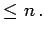

Inhalt Index DeskTop Bronstein

 Algebra und Diskrete Mathematik Elementare Zahlentheorie Teilbarkeit Primzahlen
Algebra und Diskrete Mathematik Elementare Zahlentheorie Teilbarkeit Primzahlen


Mit dem Sieb des ERATOSTHENES kann man alle Primzahlen ermitteln, die kleiner als eine vorgegebene natürliche Zahl n sind:
Alle markierten bzw. nicht gestrichenen Zahlen sind Primzahlen. Es handelt sich dabei um alle Primzahlen 
In der Menge der ganzen Zahlen werden die Primzahlen und die zu diesen entgegengesetzten Zahlen Primelemente genannt.